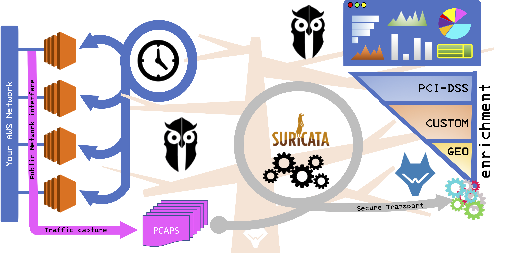

SoftwareTAP for Cloud (AWS and GCloud)¶
OwlH SoftwareTAP configuration will allow you to monitor traffic in your AWS environment¶
OwlH will use a SoftwareTAP (vTAP) to collect specific traffic from your instances network interfaces and forward it to an OwlH appliance that will run the Network IDS tool to do the analysis.
Scripts are configs are described here in detail. you may find some links to them inline. Also, if you want, you can access our OwlH net-tap repository to see all them.
Main steps:
- Prepare your environment
- Wazuh system
- main components
- Deploy OwlH master as Suricata Network IDS
- Integrate OwlH master with Wazuh
- Configure Ansible in OwlH master
- Delay between capture
- File rotation time
- Define capture BPF filter
- Configure your servers
- Register your servers
- Integrate into elastic stack
- Network IDS alert enrichment
- GEO ip
- Custom
- PCI-DSS
Wazuh system¶
Be sure you have at least one Wazuh manager and elastic stack working before to continue. Please follow Wazuh documentation.
Main Components¶

Note
For cloud like AWS or Google Cloud should be good idea to deploy our instances with two different network interfaces, so we can use main interface as public service interface and secondary for management propouses, as traffic forward from instances to OwlH system
- OwlH master
| Instance | t2.xlarge |
- A more detailed block diagram
Deploy OwlH master as Suricata Network IDS¶
Suricata deployment script will help you to deploy Suricata 4.0.4 from source code in a Amazon Linux box.
If you prefer a different way to deploy suricata, please follow Suricata documentation.
Integrate OwlH master with Wazuh¶
Integrate OwlH master with Wazuh is pretty easy. We only need to deploy our Wazuh agent into the OwlH master. Follow Wazuh agent deploy instructions for RPM packets to deploy the agent.
in summary, you will set up the repository by running the following command:
# cat > /etc/yum.repos.d/wazuh.repo <<\EOF
[wazuh_repo]
gpgcheck=1
gpgkey=https://packages.wazuh.com/key/GPG-KEY-WAZUH
enabled=1
name=Wazuh repository
baseurl=https://packages.wazuh.com/3.x/yum/
protect=1
EOF
and now, install wazuh agent
# yum install wazuh-agent
now, lest register agent into your Wazuh Manager. if you are using authd on your manager:
# register agent
/var/ossec/bin/agent-auth -m 1.1.1.1 -A owlhmaster
A few things here:
1.1.1.1 # is your wazuh manager ip
-A # option means that you want to specify a name other than hostname.
# This command suppose tcp/1515 port used,
# if not, you should change command to include the right port.
Please review, authd documentation or find a different way to register your agent. Register agent documentation
Ginally, modify your ossec.conf file to monitor your suricata output
<localfile>
<log_format>syslog</log_format>
<location>/var/log/suricata/eve.json</location>
</localfile>
And restart your wazuh agent
$ systemctl restart wazuh-agent
Configure Ansible in OwlH master¶
Please, remember that we are working in an amazon linux system. Check ansible documentation if you want to deploy it in a different system
- Allow EPEL repository configuration
Edit epel.repo and enable epel repository
sudo vi /etc/yum.repos.d/epel.repo
include
[epel]
...
enabled=1 # by default is set to 0
save and close it.
Install ansible
$ sudo yum -y install ansibleCreate Ansible Key that will be used to manage Traffic capture in your servers
# Create ssh keys
ssh-keygen -q -t rsa -C "owlmaster@owlh.net" -f ~/.ssh/owl -N ""
Check your owl.pub file and remember that you will use it when registering your servers in OwlH master
cat owl.pub # it should looks like this
ssh-rsa AAAAB3NzaC1yc2EAAAADAQABAAABAQDAfHtB6SGRdWXYEkI+TPgRwnOvwHP0rETVW20X+fokSGmPxH32S2JOw7XoSKp6/sdlqT/iBLhewFsKqc1l+Cx6i/U8httZNBLnDcE/Y8Q5RUoZQqyv2mlrrbtUHeY3Cxm6tOP0sS5iEtg4gCpUage1wDDPITsg9OtX1ljoxn+67QJJuZa7q4J41KQZYD1IyH3HSuA8hk6hURdb+hc9GycQZ6wkejRURlll6j9vfO0dMl4KN6U8QA8g4s7/j10MZJlf1UK2a0U1taqYI1zkPEyJnLDQYkI41+AeHoSuElfN7IG2e+EZOWxcTGL/5dRK5+Hb1dx1iK1rBUzHMW7s0b21 owlmaster@owlh.net
- Create a playbook folder
# create palybooks folder
sudo mkdir /etc/ansible/playbooks
Install traffic capture Ansible playbooks¶
- Traffic capture control playbook:
This is Traffic capture control playbook
# owlmaster
# Version 0.0
# Ansible Playbook - run tcpdump on destination
# use '-Z owl' after -F option with tcpdump command if you need to specify owl user.
- hosts: srvs
tasks:
- name: start tcpdump on servers
shell: "(sudo tcpdump -i {{ ansible_default_ipv4.interface }} -G 3 -w {{ pcaps_path }}$(hostname)-%y%m%d%H%M%S.pcap -F myfilter &)"
async: 10
poll: 0
become: true
become_user: owl
become_method: su
- Captured traffic management: Move captured traffic to OwlH, clean remote server traffic files.
Remote Traffic management
# owlmaster
# Version 0.0
# Ansible Playbook - get pcap files from servers
- hosts: srvs
tasks:
- name: get pcap files from servers folder, older than age (period) in seconds
find:
paths: "{{ pcaps_path }}"
age: "{{ period }}"
register: pcap_files
- include_tasks: getanddelete.yaml pcap_file={{ item.path }}
with_items:
- "{{ pcap_files.files }}"
Transport and clean remote traffic
# owlmaster
# Version 0.0
# Ansible tasks file - get file and delete file
---
- name: get remote PCAP file
fetch:
src: "{{ pcap_file }}"
dest: "{{ localpcaps_path }}"
flat: yes
- name: delete remote PCAP file
file:
path: "{{ pcap_file }}"
state: absent
- Analyze captured traffic with Suricata
# owlmaster
# Version 0.0
# Ansible Playbook - get PCAP files ready to be analyzed
- hosts: localhost
tasks:
- name: get PCAP files ready to be analyzed
find:
paths: "{{ pcaps_path }}"
register: pcap_files
- include_tasks: managesuricata.yaml pcap_file={{ item.path }}
with_items:
- "{{ pcap_files.files }}"
- Analyze and clean traffic
Note
Please be sure your suricata path is the right one. The one included here is a compiled from 4.0.4 source in a amazon linux instance. It may vary
Suricata binary path: /usr/local/suricata-4.0.4/bin/suricata
Suricata config path: /usr/local/etc/suricata/suricata.yaml
Note
Please, configure your Suricata path as needed.
# owlmaster
# Version 0.0
# Ansible tasks file - use suricata to analyze and clean PCAP files
---
- name: read pcap with suricata
command: sudo {{ suricata_binary }} -c {{ suricata_config }} -r {{ pcap_file }} -k none
become: true
become_user: owl
become_method: su
- name: mv file to managed queue
command: mv {{ pcap_file }} {{ managed_pcap }}
- configure your main Variables.
create a file /etc/ansible/group_vars/srvs.yaml and include following lines
Be sure you define the right path for your ansible_ssh_private_key_file. this is the one you have done few lines over this.
Copy the Global Ansible Vars file to the /etc/ansible/group_vars/srvs.yaml file
Please, be sure you have right values for each variable.
---
ansible_ssh_private_key_file: /home/ec2-user/.ssh/owl
ansible_ssh_user: owl
period: 60
filterpath: /var/owlh/etc/bpf.filter
pcaps_path: /var/owlh/traffic/
managed_pcap: /var/owlh/managed_traffic/
localpcaps_path: /var/owlh/traffic/
suricata_binary: /usr/local/suricata-4.0.4/bin/suricata
suricata_config: /usr/local/etc/suricata/suricata.yaml
Warning
PCAP behaviour:
you can choose to store analyzed PCAP files or remove them after analysis is done.
managed_pcap means the folder in which one you want to store analyzed PCAP files. This can be useful as forensic storage, so you may want to use an S3 bucket to save them.
If you choose a folder, make sure the folder is present and has the right permissions.
BPF filter
You can specify what traffic to be captured if you don’t want to capture everything. Main and default configuration will provide filter to not collect management traffic from OwlH master to your agents.
Remember this filter must be deployed into each one agent. be sure it is on each one of your servers.
Your bpf filter should be at least something like this
not host 1.1.1.1 and not port 22
Where 1.1.1.1 must be replaced with your OwlH master ip that will connect to your server.
Configure your servers¶
We will need some tools and a user in each one of your servers in order to coordinate the traffic capture functionality
- Create and configure owl user in your servers
The owl user will be use by Ansible to run traffic capture and collect pcap files. to create user and configure it please follow this script:
#!/bin/bash
# 28.02.18 tested in amazon Linux instance - @owlmaster
# NOTE -- run this script in a server using
# sudo bash owluser-setup.sh
sudo adduser owl
echo "create owl user ssh folder"
sudo -u owl mkdir /home/owl/.ssh
echo "setting ssh folder permissions"
sudo -u owl chmod 700 /home/owl/.ssh
echo "create authorized keys file"
sudo -u owl touch /home/owl/.ssh/authorized_keys
echo "setting authorized keys permissions"
sudo -u owl chmod 600 /home/owl/.ssh/authorized_keys
echo "include owlmaster key - this is your owl.pub created on your OwlH master"
sudo -u owl echo "ssh-rsa AAAAB3NzaC1yc2EAAAADAQABAAABAQDUcJhz9gpE2a1gra67eF/0jjsTBtNHRMawZGLDjQM5mXkmcfy4BTrykvuby0eEEO9hhSRMA5so9cAsmAkQKpW0dxRx0Y5c8LKwrtkzmOHrltQrFTeLmaJaojXDIjVch6XNTwOSnOO9b9O5KKjsJe86I55YP+4sf3ux7azEYVEUWzoN5aqELe+Z4+/A93F142QlJLuCra3Jp5GgeZoBBU7H2bKnSOXOmEQHUjiPETDUDTb1xyb3lVdYALAW3P424KvfmoTK+i3S8hy9vMHcgHQUkyH8ijfKbHZ0V0PTC5WEqVp6bGSGmd2qzyUbapeCnzrtWjiGEhFIL+jZoIg3xXH/ owlmaster@owlh.net" >> /home/owl/.ssh/authorized_keys
# JUST IN CASE -
# sudo -u owl sudo tcpdump -i eth0
# Prepare owlh related stuff folder
echo "prepare owlh stuff folder /var/owlh"
sudo mkdir /var/owlh
sudo chown owl /var/owlh
sudo -u owl mkdir /var/owlh/traffic
sudo -u owl mkdir /var/owlh/etc
sudo -u owl mkdir /var/owlh/bin
echo "install tcpdump"
sudo yum -y install tcpdump
# Allow owl use tcpdump with sudo without password
echo "allow user owl to use tcpdump"
sudo sed -i '/^root/a owl ALL=(ALL) NOPASSWD: /usr/sbin/tcpdump' /etc/sudoers
# clean and end
echo "should be done. Enjoy your day."
Script also includes tcpdump installation as part of the traffic capture stuff. Please be sure you have tcpdump running before continue. This step is only needed if you don’t have tcpdump installed yet.
echo "install tcpdump"
sudo yum -y install tcpdump
# Allow owl use tcpdump with sudo without password
echo "allow user owl to use tcpdump"
sudo sed -i '/^root/a owl ALL=(ALL) NOPASSWD: /usr/sbin/tcpdump' /etc/sudoers
Copy bpf filter file.
Register your servers¶
We need to know a little bit about your network. At least, we need to know what are the servers that you want to capture traffic from.
Please, include in your OwlH server inventory file all your servers /etc/ansible/hosts. Define them as needed but keep srvs group name.
[srvs]
1.1.1.1
2.2.2.2
3.3.3.3
If you need help:¶
- email our support team - support@owlh.net
- visit our mailing list - OwlH mailing list (owlh@googlegroups.com)
OwlH - current v0.7 - Jan : OwlH Node and Master API
documentation last updated - Feb 09, 2019